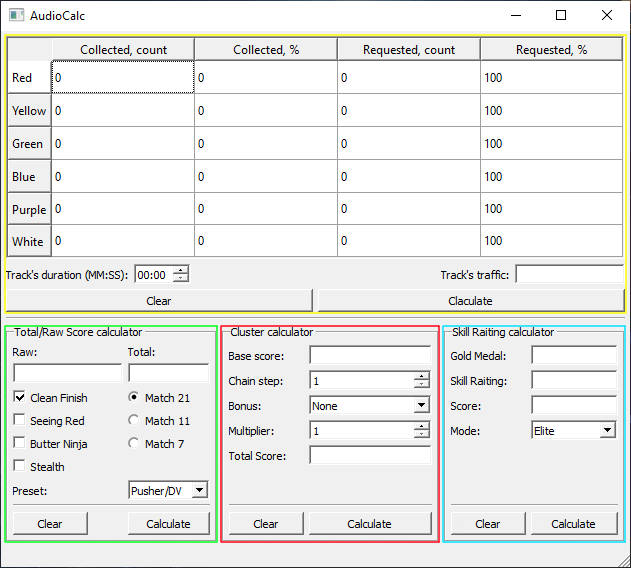

AudioCalc
This programm provide functions which can help you with some game calculations. There is a only one rule which you need to follow if you want to the program returns a correct result: Don't use dot as a value's splitter. Use dot to specify fractional portion of value. For value's splitter you can use any other symbols/words. For example:

"Skill Raiting calculator" (is highlighted by a blue frame) allows you to calc requested skill raiting or the score requested to reach entered skill raiting. To use it you need to fill the "Gold Medal" field. Now, if you would fill "Skill Raiting" field the program will print requested score to reach the specified skill raiting. On the other hand, you may fill the "Score" field. Then the program print you how many skill raiting you'll receive. If both fields is filled the program calc requested score to earn specify skill raiting
"Cluster calculator" (is highlighted by a red frame) allows you to calc a cluster value with specified bonuses:
"Total/Raw Score calculator" (is highlighted by a green frame) hepls you to find "Raw" score (the score without any afterride bonuses) or "Total" score (the score with afterride bonuses). If the "Raw" and "Total" fields is filled the programm calc TOTAL score. If one of the fields is filled the programm calc the empty one (but be sure it's indeed empty). Combo box "Preset" allows you to choose one of 3 ready presets, optimized for specified characters.
| Name | Value |
| Clean Finish | +25% |
| Seeing Red Butter Ninja |
+5% |
| Stealth | +30% |
| Match 7/11/21 | +7%/11%/21% |
The big table (is highlighted by a yellow frame) can calc total amount of specified blocks and track's traffic.
After clicking "Calculate" the program will show you how many specified blocks you need to collect to reach percent value which you specify in "Requested, %" column.
If the field "Track's Duration" is filled, the program will calc you track's traffic. But be sure there are no "0" values in "Collected, %" column.